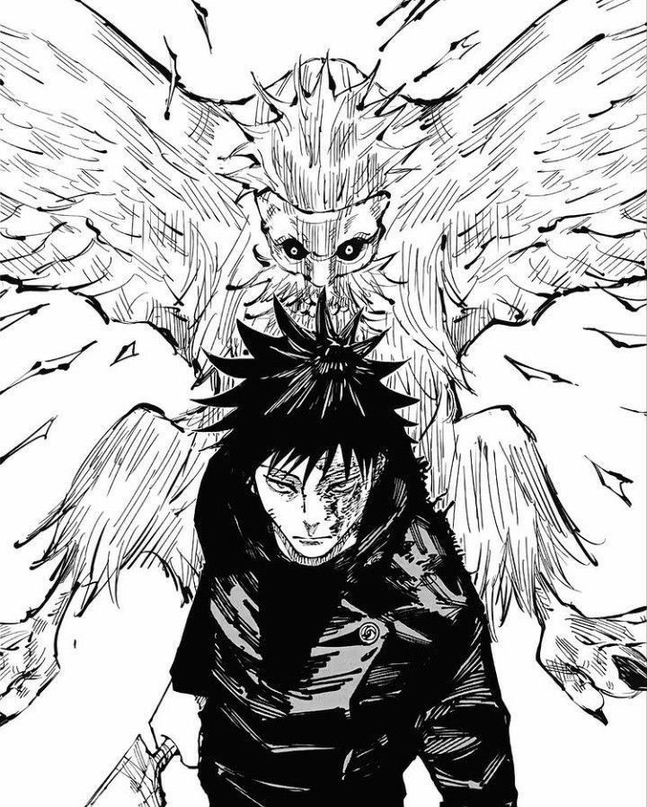

Nue e um shikigami veloz e intimidador, perfeito para ataques a distancia e para controlar o campo de batalha do alto. A presenca dele deixa as lutas do Megumi com uma energia mais agressiva, quase como se a batalha pudesse mudar de ritmo em um segundo. Acho muito legal como essa invocacao reforca o lado imprevisivel do personagem.